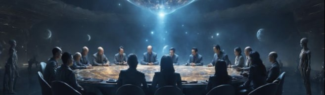

Mobirise
A Love Letter to Our Beautifully Broken Government
We like to say the American government runs on “checks and balances,” but at this point, it’s mostly just checks that bounce and balances no one checks.
Originally, the design was brilliant. Three branches of government - executive, legislative, judicial - each one keeping the others in line. A system built on tension, compromise, and oversight. It wasn’t meant to be fast or clean. It was meant to prevent tyranny, reward negotiation, and make sure no one had too much power for too long.
In its best moments, that worked.
Laws were passed. Budgets approved. Roads paved. Schools built. Opposing parties actually talked to each other. The machine groaned, but it moved. Sometimes it even ran well.
But today, the system looks more like a slow-motion demolition derby. Agencies compete instead of collaborate. Political parties treat each other like warring tribes. Lawmakers hold votes hostage for headlines. Bureaucrats juggle paperwork and lawsuits while trying to find someone - anyone - authorized to say yes.
It’s not a well-oiled machine. It’s a tangle of gears grinding against each other - loud, slow, and usually stuck.
And yet, somehow, there are people who believe this same tangled mess is behind perfectly executed global conspiracies.
Vaccines that rewrite your DNA. Voter machines rigged by invisible hands. Weather manipulated for political reasons. Immigrants used as biological weapons. Surveillance hidden in your lightbulbs. Microchips in medicine. Chemtrails. Clones. False flags. Faked moon landings. Entire elections scripted like reality TV.
Let’s stop right there.
We are supposed to believe that the government — the one that can’t fix the DMV, balance a budget, or prevent its own data breaches - is running multi-decade, multi-agency, multi-administration cover-ups involving thousands of people, and not a single credible leak?
That’s the logic? The same government that lost track of pandemic supplies, that can’t build a healthcare website, that leaks like a spaghetti strainer… is also capable of flawlessly orchestrating covert programs that span continents, ideologies, and presidential terms?
But wait — the plot thickens.
Because now, we’re told that it’s not even that government doing it. It’s the real government - the “deep state.” A shadowy, unofficial cabal of lifelong insiders who actually run the show while the elected clowns distract us with chaos.
This is where people feel clever. As if they’ve seen through the illusion. As if they’ve found the lever behind the curtain.
But let’s look closer - with logic, not suspicion.
Mobirise